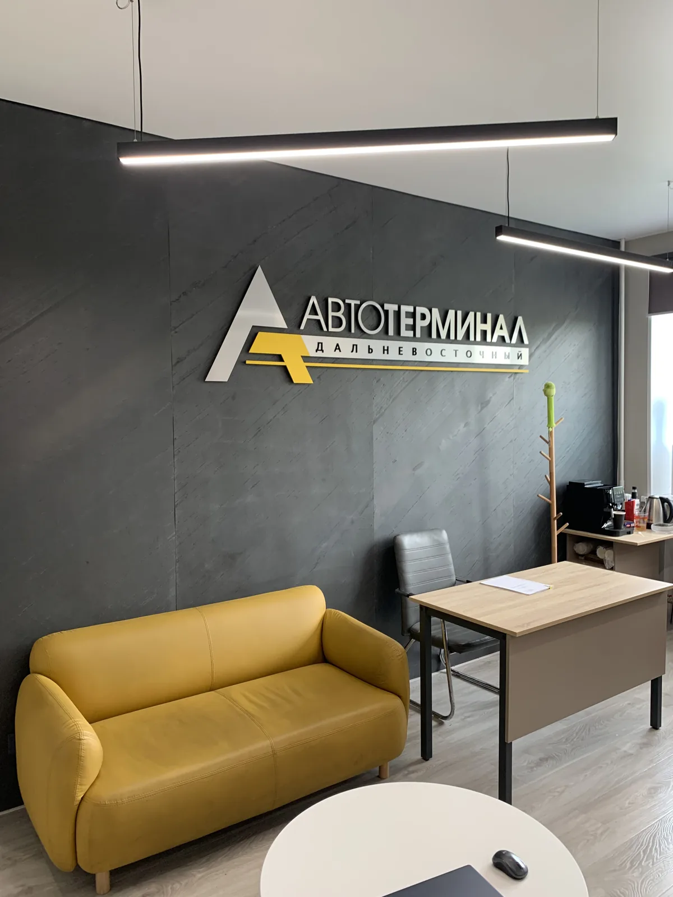
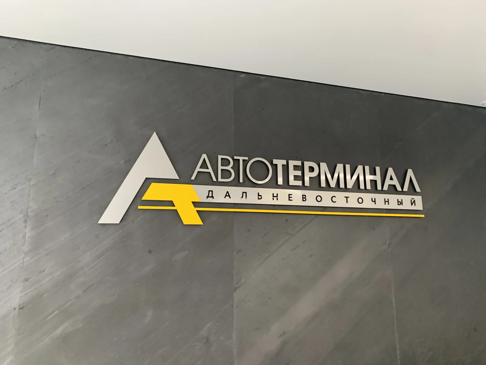
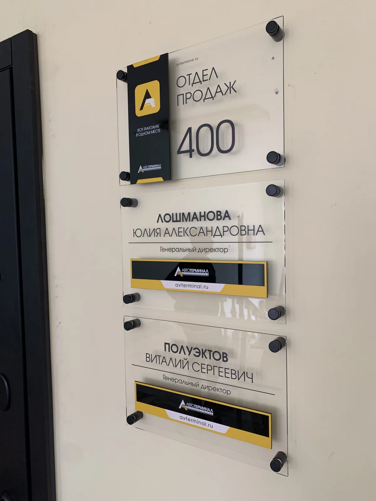
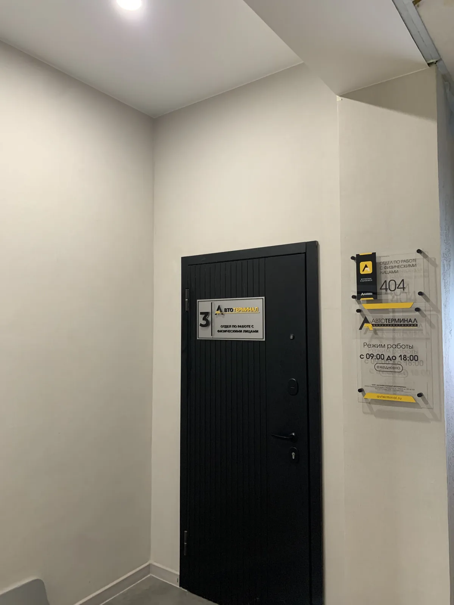

← Все проекты
Комплексное рекламное оформление бизнеса
Автотерминал
Комплексное рекламное оформление «Автотерминала Дальневосточного»: навигация, информационные элементы, объёмные логотипы и бренд-стены в фирменном стиле.
Уссурийск · 2026Навигация и вывескиФирменный стиль

01 / Комплексное рекламное оформление бизнеса
Знак в интерьере
Объёмные логотипы на стойке администратора и бренд-стене формируют образ компании в зоне встречи. Фирменный стиль связывает сатинированное серебро, графитовый фон и жёлтый акцент.

02 / Комплексное рекламное оформление бизнеса
От входа до кабинета
Уличные баннерные вывески, таблички-указатели, стенд с отделами и номерами кабинетов, а также информация о режиме работы образуют единую навигационную систему.


От идеи до готового объекта
Есть похожая задача?
Расскажите о вашем проекте — обсудим оформление, детали и реализацию.